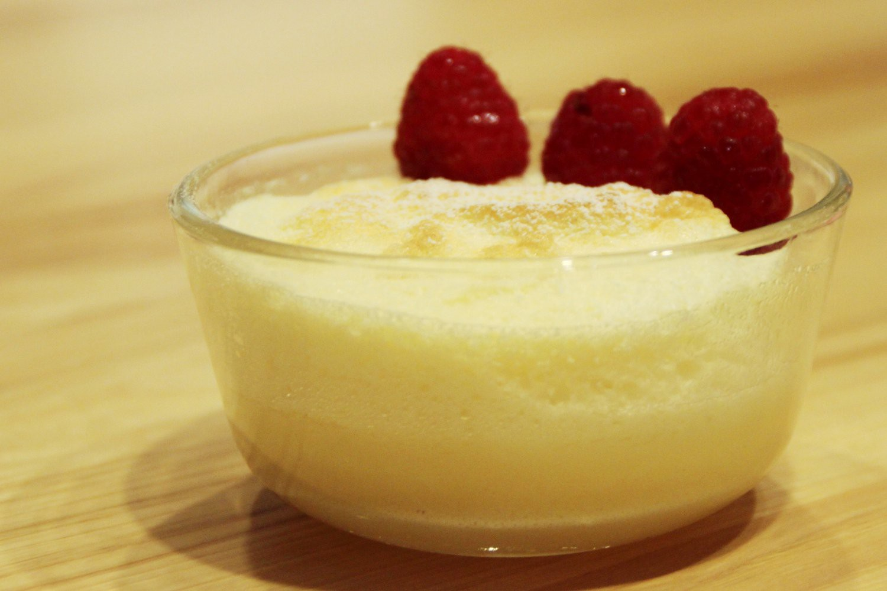

Home
Simple Custard

Image: "Custard" by Stacy Spensley, used under CC BY 2.0.
Description
This custard recipe is a combination of a few different recipes I've tried. It's not too rich or too sweet as many egg custards can be. Can be served warm immediately or cold.
Ingredients
- 4 cups whole milk
- 1 tablespoon vanilla extract
- 1 teaspoon butter
- 4 large eggs
- ½ cup white sugar
- 3 tablespoons cornstarch
Steps
- Gather all ingredients.
- Place milk, vanilla extract, and butter in a saucepan.
- Cook and stir over medium heat until simmering; remove from heat before it comes to a boil.
- Whisk eggs, sugar, and cornstarch together in a bowl until sugar dissolves.
- Set the saucepan back over low heat. Pour in egg mixture slowly, whisking constantly, until custard thickens enough to coat the bottom of a spoon, 5 to 10 minutes.
- Serve warm or transfer custard into a large bowl and cover.
- Allow to cool before chilling. Enjoy!
Recipe from Simple Custard – AllRecipes.